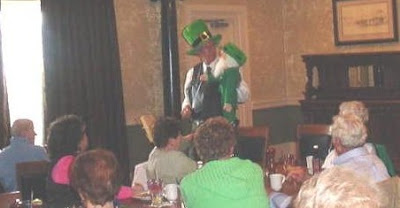

St. Pat's Show
3/17/2010
{kind=link}

From Joe Radle:
Dear Clinton, I thought I'd pass this picture along to you of a show I gave on March 15th, 2010 to our Bedford, Virginia YMCA Arthritis Class [ in the water ] group luncheon. We met at the Railroad Station Restaurant in Bedford and had a grand time of it, begorra!
I sang a few Irish songs, which I accompanied myself with a guitar, including, "The Irish Rover" about the most famous ship that ever sailed the seven seas, "Who threw the overalls in Mrs. Murphy's Chowder," and of course, "Danny Boy". I ended the singing with, "Phil the Fluther's Ball" Then came my little puppet friend, "Shamus O'Toole" who told everyone about the fact that he was his Own Grandpa.
I sang a few Irish songs, which I accompanied myself with a guitar, including, "The Irish Rover" about the most famous ship that ever sailed the seven seas, "Who threw the overalls in Mrs. Murphy's Chowder," and of course, "Danny Boy". I ended the singing with, "Phil the Fluther's Ball" Then came my little puppet friend, "Shamus O'Toole" who told everyone about the fact that he was his Own Grandpa.